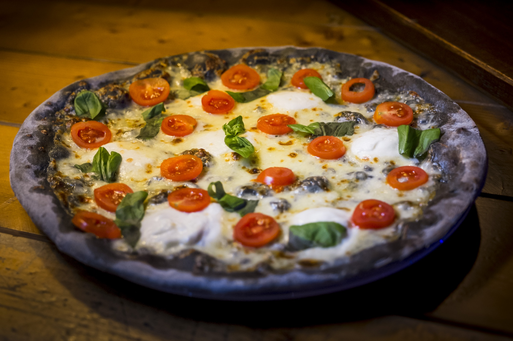

Pizza Bianconera

Impasto al carbone vegetale, mozzarella di bufala, pomodorini e basilico.
Pura semplicità per celebrare la squadra italiana più forte al mondo.
Ingredienti:
Ricetta e preparazione:
- Dedicarsi alla preparazione dell'impasto principale.
- Preparare la polvere di carbone vegetale, da unire all'impasto.
- Sistemare l'impasto in una ciotola e lasciar riposare in un ambiente tiepido fino a quando
il composto triplica di volume (8-9 ore).
- Preriscaldare il forno a 200°C
- Farcire la pizza
- Cuocere a 200°C per 15/20 minuti.
Valori nutrizionali
| Calorie |
215 Kcal |
| Carboidrati |
26.70 g |
| Proteine |
9.50 g |
| Grassi |
8.50 g |
| Colesterolo |
13.60 mg |
| Fibre |
1.20 g |
Back